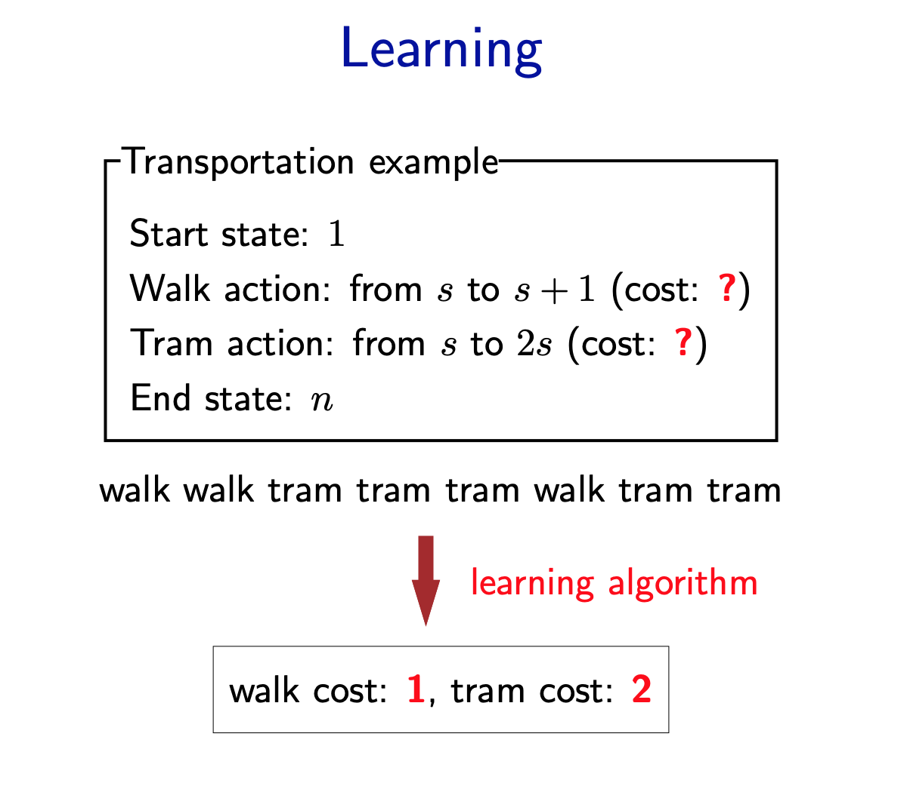
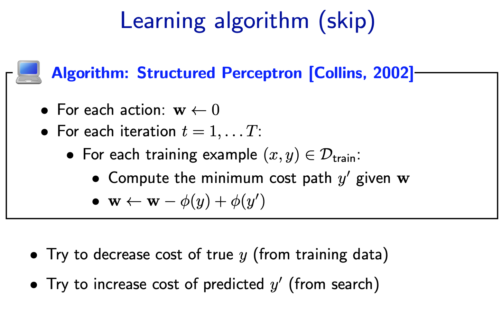
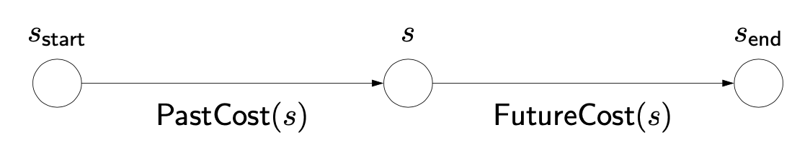
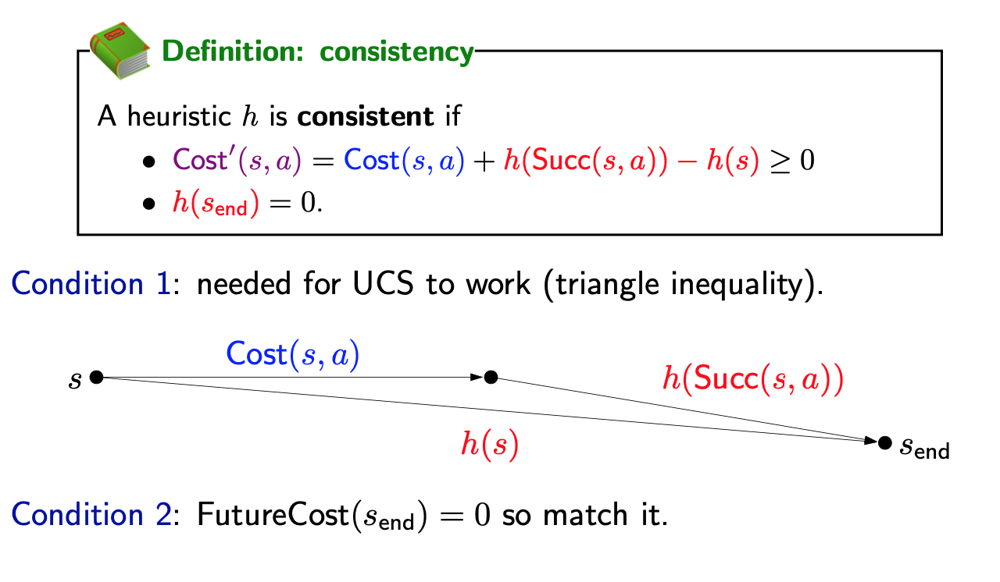
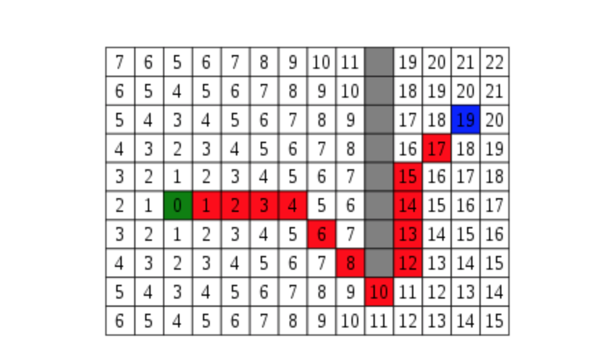

Review
Definition: search problem
- $S_{start}$: staring state
- Actions(s): possible actions
- Cons(s,a): action cost
- Succ(s,a): successor
- IsEnd(s): reached end state?
Objective: find the minimum cost path from $S_start$ to an $s$ that satisfying IsEnd(s).
1 |
|
Learning problem
Now suppose we don’t know what the costs are, but we observe someone getting from 1 to n via some sequence of walking and tram-taking. Can we figure out what the costs are? This is the goal of learning.

Let’s cast the problem as predicting an output y given an input x. Here, the input x is the search problem (visualized as a search tree) without the costs provided. The output y is the desired solution path. The question is what the costs should be set to so that y is actually the minimum cost path of the resulting search problem.

1 | import sys |
A Star Search

UCS: explore states in order of PastCost(s)
A start: explore in order of PastCost(s) + h(s)
- A heuristic h(s) is any estimate of FutureCost(s).
- First, some terminology: PastCost(s) is the minimum cost from the start state to s, and FutureCost(s) is the minimum cost from s to an end state. Without loss of generality, we can just assume we have one end state. (If we have multiple ones, create a new official goal state which is the successor of all the original end states.)
- Recall that UCS explores states in order of PastCost(s). It’d be nice if we could explore states in order of PastCost(s) + FutureCost(s), which would definitely take the end state into account, but computing FutureCost(s) would be as expensive as solving the original problem.
- A star relies on a heuristic h(s), which is an estimate of FutureCost(s). For A star to work, h(s) must satisfy some conditions, but for now, just think of h(s) as an approximation. We will soon show that A star will explore states in order of PastCost(s) + h(s). This is nice, because now states which are estimated (by h(s)) to be really far away from the end state will be explored later, even if their PastCost(s) is small.
F = G + H
One important aspect of A star is f = g + h. The f, g, and h variables are in our Node class and get calculated every time we create a new node. Quickly I’ll go over what these variables mean.
- F is the total cost of the node.
- G is the distance between the current node and the start node.
- H is the heuristic — estimated distance from the current node to the end node.
Consistent heuristics

- We need h(s) to be consistent, which means two things. First, the modified edge costs are non-negative (this is the main property). This is important for UCS to find the minimum cost path (remember that UCS only works when all the edge costs are non-negative).
- Second, h(send) = 0, which is just saying: be reasonable. The minimum cost from the end state to the end state is trivially 0, so just use 0.
Correctness of A*
If h is consistent, A star returns the minimum cost path.
Admissibility
A heuristic h(s) is admissible if
Theorem: consistency implies admissibility
If a heuristic h(s) is consistent, then h(s) is admissible.
Relaxation
With an arbitrary configuration of walls, we can’t compute FutureCost(s) except by doing search. However, if we just relaxed the original problem by removing the walls, then we can compute FutureCost(s) in closed form: it’s just the Manhattan distance between $s$ and $s_{end}$. Specifically, ManhattanDistance((r1, c1), (r2, c2)) = |r1 − r2| + |c1 − c2|.
- More formally, we define a relaxed search problem as one where the relaxed edge costs are no larger than the original edge costs.
- The relaxed heuristic is simply the future cost of the relaxed search problem, which by design should be efficiently computable.

1 | import heapq, collections, re, sys, time, os, random |